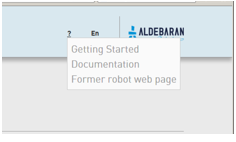
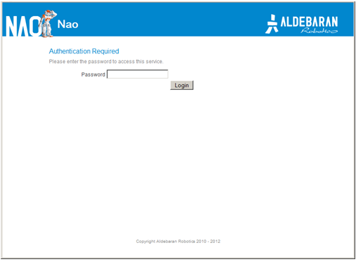

Former NAO Web page¶
How to access the former NAO Web page¶
| Step | Action |
|---|---|
Access to the NAO Web page. 
For further details, see: Accessing the NAO Web page. |
|
Choose ? > Former robot web page. The screen below is displayed.  |
|
Complete the Password field and click the Login button. The password default value is nao.
If you have lost your password, see:
Lost your password.
|
Former NAO Web page¶
Home page¶

| Part | Name | Description |
|---|---|---|
| A | Menu |
|
| B | Key information | Displays a short summary of NAO‘s system. Click the information to quickly access the corresponding detailed page. |
| C | NAO‘s picture | Not sure to be connected to the correct robot? Make him say a short sentence.
|
Network¶

The table below lists the information displayed by Network screen.
| Name | Displays ... |
|---|---|
| Connections | Address and Mac Address of the Wired and Wireless connections currently used. Tethering button allows you to activate an advanced feature. For further details see: NAO as a mobile WiFi Access Point. |
| Country | the current country used for WiFi service detection. |
| Available networks | the list of available networks, Wired and Wireless. To configure a new connection:
|
Settings¶

List of settings
| Settings | Description | See also |
|---|---|---|
| Name | NAO host name. Make sure your NAO has a unique name when joining a community. | |
| Password | For this Web page, but also ftp and ssh connections. | NAOqi OS - user accounts, FTP Access, Accessing NAO over ssh. |
| Web Services | Allows you to associate your NAO with an authorized Aldebaran Robotics user account only. | Aldebaran Robotics Web Services |
| NAO‘s buddy icon | The buddy icon or avatar used to represent your robot. | Connection widget |
| Language | Sets NAO language for speech synthesis and recognition. | |
| Time Zone | Important for the robot to know what time it is. | |
| Volume | Sets the volume of NAO Loudspeakers. | How to set NAO’s volume, Loudspeakers. |
| Fall Manager reflex | Permit deactivation of the safety reflexes. | Consent for the deactivation of safety reflexes |
| Issue Reporting | When enabled, issue reports are automatically sent to Aldebaran Robotics and then deleted from the robot at boot time. | How to retrieve an issue report |
| Remote Controls | Allows to configure Infra-Red interaction with an external IR device. | Set a remote control |
Advanced¶
| Settings | Description | See also |
|---|---|---|
| Naoqi | Allows you to start, stop or restart NAOqi, and to visualize currently running modules. | Monitoring NAOqi |
| Packages | Displays the packages currently uploaded. | |
| Memory | Allows you to search for any memory key in order to check is current value. | ALMemory |
| Process | Displays the processes currently running. | |
| Hardware | Displays useful information about Devices, Joints, Configurations and Temperatures. |
Related topics¶
Aldebaran Robotics Web Services¶
Every robot can be associated with an authorized Aldebaran Robotics user account only. By this way, you will be able to access to extended features as soon as they are available online.
To associate your robot:
| Step | Action |
|---|---|
| Fill in the form with the user name and the password you use to connect Aldebaran Robotics website and click on Connect. | |
| Check the box Remember me to save your user information, so the robot can automatically reconnect to web services at startup. If unchecked, you will have to fill this form again to associate your robot. |
Consent for the deactivation of safety reflexes¶
To give your consent, you must:
| Step | Action |
|---|---|
| Access to the Former NAO Web page. | |
| Click the Settings tab. | |
Check the Fall Manager reflex box. 
A pop-up asks for confirmation. 
|
|
| By clicking on the button: I understand the risks, you allow the deactivation of the Fall manager and all other safety reflexes. |
For further details, see: Deactivation of the safety reflexes.